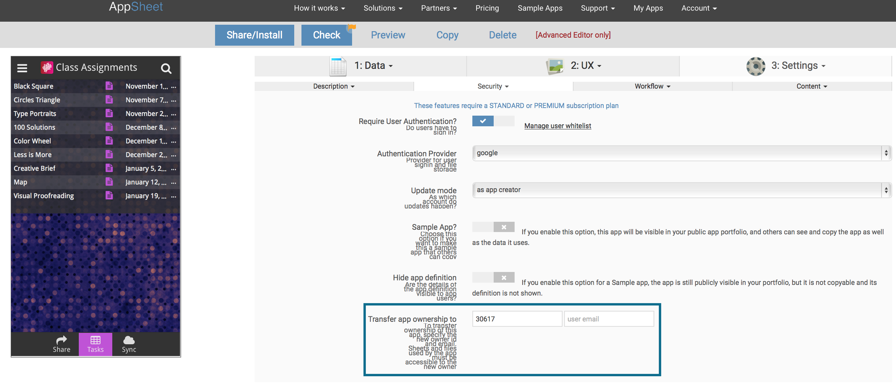

You might want to transfer your ownership of any app to another user for a variety of reasons. This means the new user will have full control of the app's permissions and setup.
To transfer ownership to another user, use the Advanced Editor>Settings>Security tab. You will need to specify the person's user number and email address (both are shown on the Account page). By requiring both pieces of information, we ensure that you must communicate with a user before transferring the ownership of an app to him/her. Once you hit 'Save' the new user will have full ownership.

It is very important that the new user also have access to the files (sheets, images, PDFs, etc) and folders used by the app. Otherwise the app will stop working the moment ownership is transferred. If you are working with Google Sheets and are transferring to user B, make sure to share the sheet(s) with user B. It is also important that user B accepts the shared sheet via "Add to my Drive".